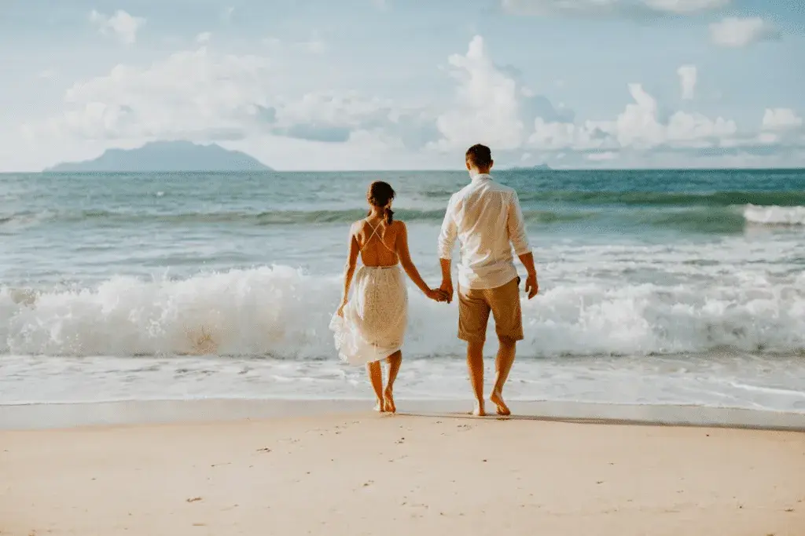
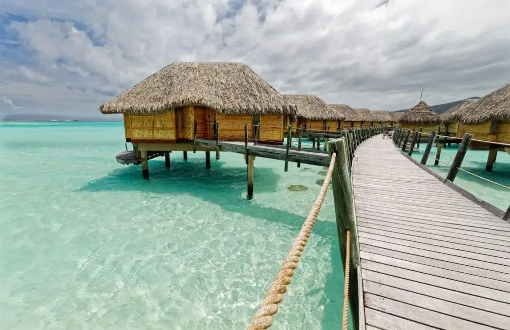
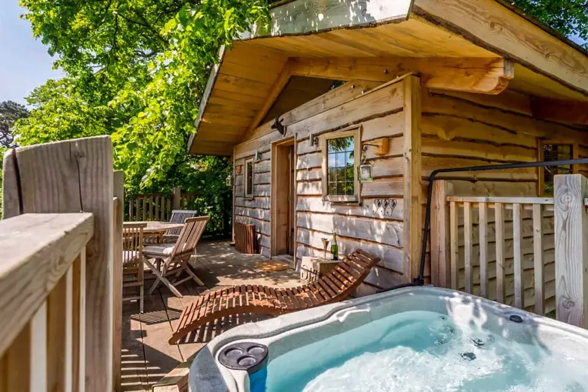
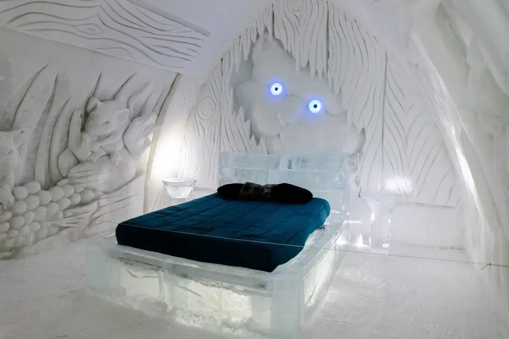
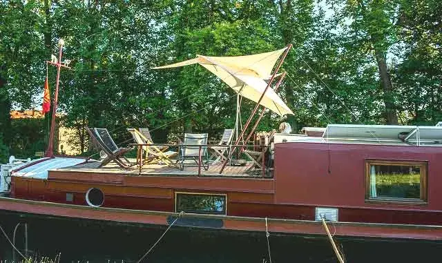
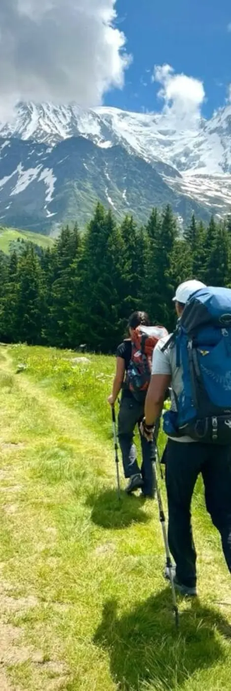
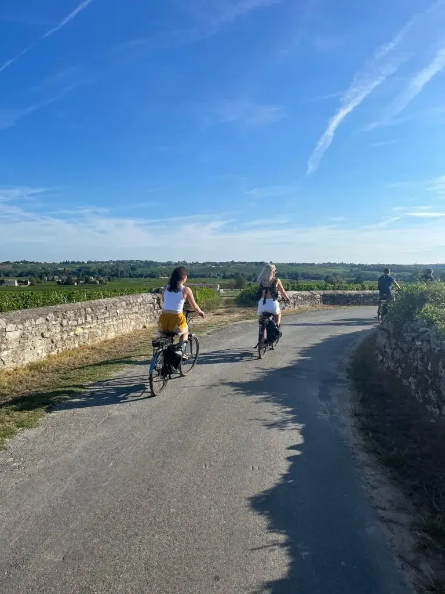
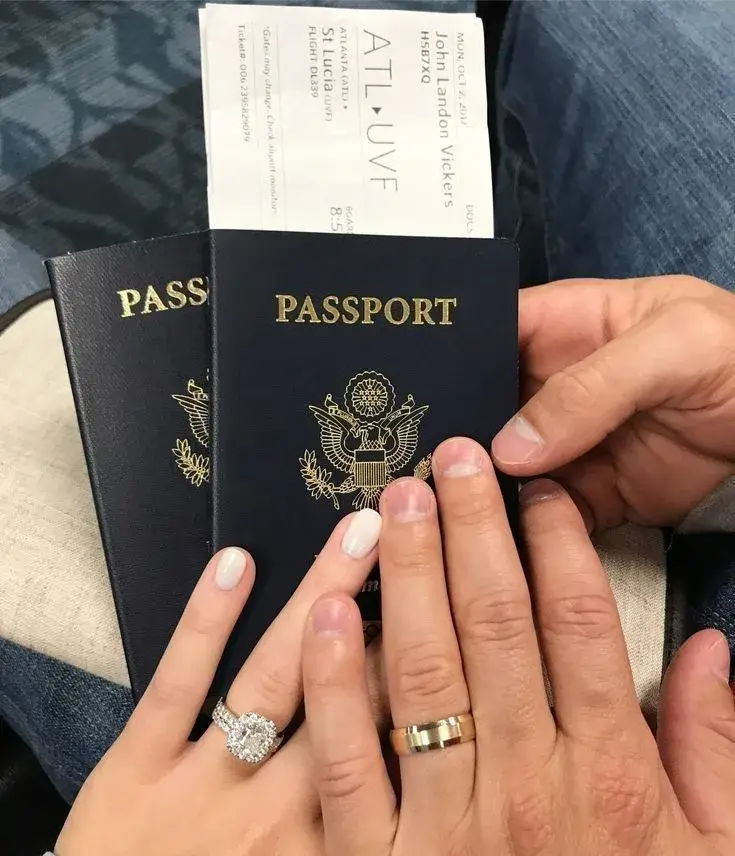
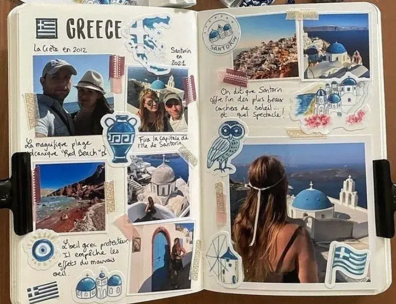

The honeymoon is the ideal opportunity to relax and recharge after the excitement of the wedding. Whether you choose to explore exotic destinations abroad or enjoy French regions such as Bordeaux, the key is to make this trip unforgettable. From setting the budget to choosing activities and selecting accommodation, every detail counts in turning this stay into a magical, memorable moment. Here are a few tips for planning an unforgettable honeymoon step by step:

Which destination?
What is the first criterion for a successful, memorable honeymoon? The destination, of course!
Are you more drawn to idyllic beaches, snowy mountains, culturally rich cities such as Bordeaux or safaris in the wild? If you dream of a romantic setting, why not consider idyllic destinations such as Tahiti, Venice or the Fiji Islands? And if you are looking for adventure, how about discovering Lapland or Panama? Or would you rather stay in France and discover its many treasures? The options are endless, but the key is to choose a place that makes you dream. Take the season into account when choosing your honeymoon destination!
Is it spring? Where should you go for your honeymoon? I recommend Japan for the cherry blossoms, Alsace in festive mood for Easter, Costa Rica in green and blue, and Cuba under the tropical sun.
Want to leave in early May? The best destinations are Ireland, Laos, Peru and Norway.
Want to travel in autumn? Choose Greece, Morocco, Uzbekistan or Egypt. Want to go away in winter, at Christmas? That is when the northern lights of Iceland light up the sky and the snowflakes fall…
Looking for warmth and tropical beaches instead? Then opt for Greece, Australia, the Canary Islands or Malaysia. The buzz of Morocco and the tranquillity of Indonesia are also very enjoyable in winter!
Choose the ideal accommodation!
The choice of accommodation plays an important role in making your honeymoon unforgettable.
There is a wide variety of accommodation: hotels, palaces, villas, overwater bungalows, treehouses, igloos, houseboats or full-board resorts. Note that some accommodation offers special services for honeymooners, such as romantic decoration in the room or a private dinner on the beach.
Before booking, check the reviews and the included services (spa, dining, activities…). Want something more intimate and close-knit? Why not take a van on a road trip along the Bordeaux wine route, or abroad to discover several places? These one-of-a-kind experiences strengthen your bond and let you share extraordinary moments of intimacy.




Have you planned the budget for your honeymoon?
After the expenses of the wedding, the aim is to save as much as possible. Look at the offers on Groupon, which regularly offers discounts on accommodation and packages including many services. An all-inclusive package will help you save money and avoid carrying cash.
Want the best flight prices? So you don't miss anything, set up flight alerts.
And what if, instead of a wedding gift list, you set up a honeymoon fund? The money collected will let you treat yourselves to an unforgettable trip, and your loved ones will have helped make it possible! It is a bit like your friends and family giving you a ticket to happiness!
When should you go on honeymoon?
A piece of advice: don't fly out the day after your wedding! If you have a long flight, you risk arriving exhausted, barely able to say "hello", let alone enjoy the warm sand. Leaving some time between the two will also spare you the stress of organising the wedding and the honeymoon at the same time. So why not allow a little breathing space?
If you are in a hurry, don't panic! You can also plan a mini-moon just after the wedding. A short but intense stay! Then, once you have recovered a little from your emotions and regained your energy, you can save up for a longer honeymoon a year or two later.
Plan your activities
Think about the activities you want to do. Do you want to go hiking, take bike rides and discover the châteaux of Bordeaux, relax in the hot tub or by the fire with a good book? Don't forget that the honeymoon is also meant for resting and spending time together.
Try not to overload your schedule, alternating between sightseeing and rest! Your honeymoon probably isn't the time to cross a whole continent on foot, rushing from one visit to the next. A honeymoon is above all a time to unwind, a romantic interlude, not a stressful time!


Plan ahead
Book your flights, accommodation and activities well in advance to avoid last-minute stress and get good prices. Don't forget to check the administrative formalities such as visas, vaccinations and travel insurance.
Would you rather leave right after the wedding? Or several months later, during your summer holidays for example?
Why not consider travelling outside the tourist season to avoid the crowds? When choosing the date, also take the weather conditions into account.


How will you capture your honeymoon?
So that your honeymoon leaves you with unforgettable memories, capture them by taking photos and videos, and by recording your feelings and adventures in a travel journal. As you will have gathered, it is important to keep a record of your honeymoon so you can relive the memories in 10 or 15 years…
In short…
By following these tips, you will give yourselves every chance of planning a honeymoon that will stay etched in your memory. Whether you choose an idyllic getaway or a thrilling adventure, the key is to celebrate your love and your union and keep an unforgettable memory of it! Happy planning and, above all, enjoy!
Lovely Day Event offers several services
Wedding planning
I step in at every stage of your preparations and guide you through your choices, bringing ideas and suggestions so that your wedding looks like no one but you.
On-the-day coordination
I will be the conductor of your day, managing the suppliers, the set-up of your decor and the smooth running of this beautiful day.
Wedding design
Creative and passionate, I am a certified Wedding Designer and I create a scenographic atmosphere that matches the theme of your wedding. Styling is included in Signature, or offered as an add-on to on-the-day coordination.